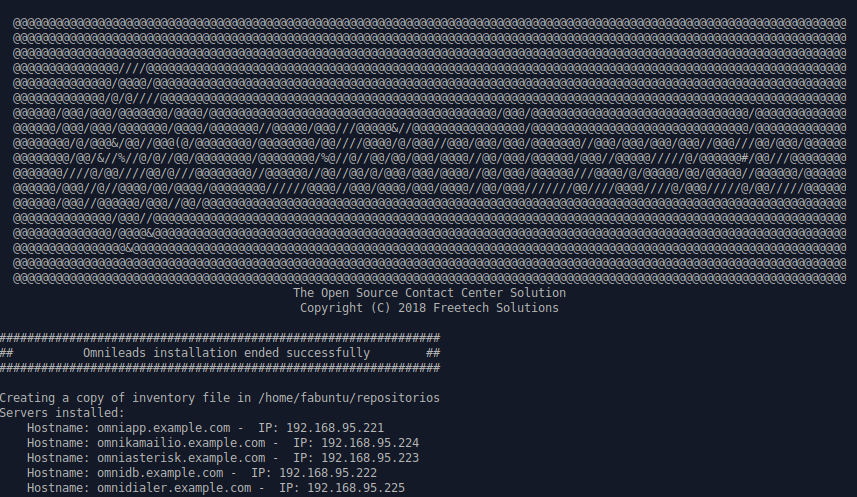

Horizontal Cluster Installation¶
OMniLeads puede ser desplegado de manera tal que los componentes queden separados en diferentes hosts. A diferencia de la instalación AIO (All In One) que despliega todo OMniLeads en un único host, este método de instalación permite dividir la carga de los servicios en más de un host.
Puntualmente existen dos formas de instalar en cluster horizontal:
OMniLeads in two:¶
- Host1 (omlvoip): Asterisk y Kamailio + rtpengine
- Host2 (omlapp): Aplicación web, Postgres y Dialer

Figure 1: Cluster in 2 hosts
OMniLeads in five:¶
- Host1 (omlapp): Aplicación web
- Host2 (kamailio): Kamailio + rtpengine
- Host3 (asterisk): Asterisk
- Host4 (database): Postgresql
- Host5 (dialer): Wombat dialer + MySQL

Figure 2: Cluster in 5 hosts
Pre-requisitos¶
Los hosts sobre los cuales vamos a desplegar los servicios en cluster deben cumplir con los siguitens requisitos:
- GNU/Linux CentOS 7 (minimal), Debian 9 (netinstall) ó Ubuntu Server 18.04
- Al menos 20 GB de espacio en disco
- Al menos 4 GB de memoria RAM
- Si es Ubuntu / Debian; Instalar el paquete sudo, openssh-server y phyton-minimal, permitir login SSH con el usuario root y reiniciar el servicio de ssh para que se tomen los cambios:
apt-get install sudo openssh-server python-minimal -y
sed -i 's/#PermitRootLogin prohibit-password/PermitRootLogin yes/' /etc/ssh/sshd_config
systemctl restart ssh
- Es muy importante dejar la hora correctamente configurada en cada host.
- Configurar una dirección IP y un hostname fijo en cada host destino de la instalación.
Preparación en la máquina que ejecuta la instalación remota:¶
Al igual que en la instalación «desde ansible remoto», para desplegar OMniLeads en cualquiera de los dos tipos de clusters, debemos proceder con la ejecución del script de deploy a partir de contar con el proyecto clonado sobre una estación de trabajo con GNU/Linux (deployer). Desde la misma se ejecuta la instalación del cluster. Para generar nuestro host «deployer», sugerimos repasar el ítem «Preparación en la máquina que ejecuta la instalación remota» dentro de la sección «instalación desde ansible remoto».
Se considera entonces que el usuario dispone del repositorio clonado en su Linux Workstation (OMniLeads deployer) !
Preparación del archivo inventory:¶
Para este tipo de despliegue, se deben configurar los parámetros hostname y dirección IP de cada host-componente de nuestro cluster.
- Ejemplo para OMniLeads in two
Figure 3: Cluster in 2 hosts, inventory file
Como se puede apreciar en la figura 3, se agrupan los componentes Aplicación web + Database + Dialer bajo un hostname y dirección IP por un lado, y por otro lado Asterisk + Kamailio bajo otro hostname y dirección IP. De esta manera se despliegan dichos componentes en dos hosts destino independientes entre si.
- Ejemplo para OMniLeads in five

Figure 4: Cluster in 5 hosts, inventory file
Como se puede apreciar en la figura 4, se separan todos los componentes Aplicación web, Database, Dialer diferentes hostname y dirección IP, ya que cada componente corre bajo un host dedicado e independiente.
Al igual que en las otras instalaciones, las variables y passwords de los diferentes componentes se pueden modificar en la sección [everyyone:vars]

Figure 5: Passwords and parameters of services
- Introducir el parámetro «time zone» adecuado para su instanacia. Es Importante que realice este paso o la instalación no se va a poder realizar.

Figure 6: inevntory - Time Zone parameter
Es importante aclarar que cada vez que se corre el script «./deploy.sh» ya sea para instalar, re-instalar, actualizar, modificar la dirección IP de OML, etc., el archivo de inventory se vuelve a «cero». No obstante se genera una copia del archivo (my_inventory), de manera tal que se cuente con los parámetros del sistema utilizados en la última ejecución del script. La copia en cuestión se ubica en el path donde ha sido clonado el repositorio de OML y bajo el nombre de «my_inventory» como lo expone la figura 6.

Figure 7: inevntory copy, my_inventory file
Ejecución del script de instalación:¶
La instalación de OMniLeads se realiza mediante el script deploy.sh, ubicado dentro de la carpeta deploy/ansible con respecto a la carpeta raíz del proyecto (ominicontacto).
Una vez configuradas las variables citadas, se procede con la ejecución del script de instalación (uitilizando sudo).
sudo ./deploy.sh -i -a

Figure 8: remote root passwords
La diferencia respecto de las otras instalacines, es que el script nos pide las contraseñas del usuario root de cada host destino de la instalación de nuestro cluster.
El tiempo de instalación dependerá mayormente de la velocidad de conexión a internet del host sobre ek que se está corriendo el deplot de OML, ya que se deben descargar, instalar y configurar varios paquetes correspondientes a los diferentes componentes de software que conforman el sistema.
Si la ejecución de la instalación finaliza exitosamente, se despliega una vista como la de la figura 8.
Figure 9: OMniLeads installation ended succesfuly
Primer acceso a OMniLeads:¶
Si la ejecución de la instalación fue exitosa, entonces vamos por el primer acceso a OMniLeads.
Errores comunes:¶
- Alguno de los hosts no tiene internet o no resuelve dominios (configuración de DNS).
Compruebe el acceso a internet de cada host (por ej: actualizando paquetes - apt-get update | yum update).
- Timeout de algún paquete que se intenta bajar. Puede volver a intentar ejecutar el deploy y si vuelve a fallar, la opción puede ser
Instalar el paquete desde la terminal.
- Falla por mala sintaxis o falta de definición de hostname y dirección IP en el archivo inventory.
Revisar archivo inventorys
- No se configuró correctamente el acceso ssh del host destino de la instalación.
Revisar estado del firewall. Comprobar acceso remoto por ssh con el usuario root
- En caso de contar con algún host Ubuntu-Debian, recordar que se deben instalar paquetes como sudo, openssh-server o python-minimal antes de correr el script de deploy.sh